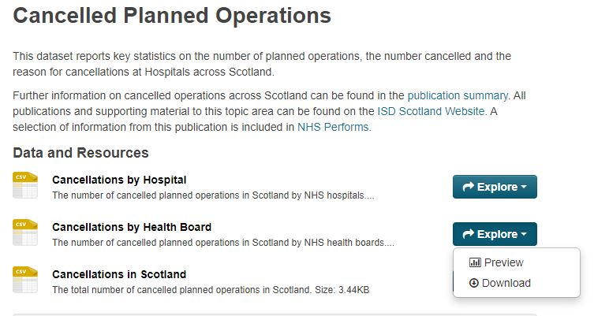
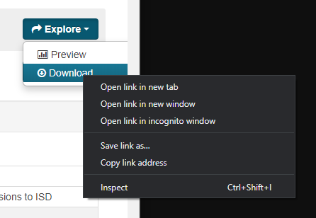

Warning: package 'downloadthis' was built under R version 4.4.3Importing Data
How to import data?
We will be using one of the datasets available from Public Health Scotland, called Cancelled Planned Operations by Health Board.
Here are the functions we’ll be covering in the the videos:
- base::library() we’re already familiar with for loading packages
- readr::read_csv() for importing CSV files
- here::here() is a function that helps R find files
- readxl::read_excel() for importing Excel files

Note: The word before the :: is the name of the package and the word after the :: is the name of a function from that package, in the format: package::function()
CSV Files
Watch the following video to find out how to import CSV files using R code and also using the import wizard, with some extra tips to help you deal with dates.
If you want to recreate the session in the video on your own computer, you can download the cancelled_operations project folder here: cancelled_operations.zip Note: To open the project, make sure to “unzip” or “extract all” from the folder, before clicking on the cancelled_operations.Rproj file to open the project in RStudio.
Alternatively, here are the individual files, but to recreate the file structure, you will need to create your own RStudio project and within this a “data” folder to store examples 2, 3 and 4 in, for the examples to work:

Download the video transcript link here.
Uncommon File Formats
In the video on how to import CSV files above, we show you how to use the import wizard to provide a preview of how R might read in your file.
The example CSV file we are using is in the common format where values are separated by commas, but as mentioned briefly in the video, if your file uses a different delimeter (separator), for example, dots or spaces or semi-colons, you can specify this in the import options of the wizard.
Excel Files
Watch the following video to find out how to import Excel files using R code and also using the import wizard.
If you want to recreate the session in the video on your own computer, you can download the cancelled_operations project folder here: cancelled_operations_excel.zip Note: To open the project, make sure to “unzip” or “extract all” from the folder, before clicking on the cancelled_operations.Rproj file to open the project in RStudio.
Alternatively, here is the individual file, but to recreate the file structure, you will need to create your own RStudio project and within this a “data” folder to store the file for it to work phs_cancelled.xlsx

Download the video transcript link here.
Note: the readxl package was developed fairly recently so if you are searching on the internet to find solutions to problems reading in Excel files, make sure to include the package name, or limit the time range.
Open Data
Open data refers to information made freely available to the general public and can be used by anyone for any purpose. The government and other public bodies such as the NHS are increasingly making datasets available to the public on the web.
Benefits of sharing
There are many benefits to opening up healthcare data to the public, including greater transparency and the empowerment of patients to be more involved in their own healthcare. But perhaps more importantly still, these datasets are a rich source of information which data scientists and analysts from around the world can tap into in order to improve our understanding of health and disease. After all, Data Saves Lives!
Show me more data!
Throughout this course, we are using open data freely available from the Public Health Scotland website, but there are many other excellent sources of open data available online too, here are a few:
NHS Open Data Portal: launched in March 2020 to improve access to healthcare data
WHO: datasets based on global health priorities
Kaggle: a whole variety of topics, not just healthcare, excellent for practicing on
UK Government: contains nearly 25,000 data sets from all central government departments and a number of other public sector bodies and local authorities
UK Data Archive: larger datasets
Global Burden of Disease: a catalog of surveys, censuses, vital statistics, and other global health-related data
Let’s look at how we can import data from the web directly from inside RStudio.
Recap Download and Import
The open data we’re going to import is one you’ll be very familiar with by now, from the Public Health Scotland website. It can be found at the following link:
www.opendata.nhs.scot/dataset/cancelled-planned-operations
As you can see from the screenshot below, the CSV files can be manually downloaded from the website.

In order to start looking at them in R, you would then have to save your file to a relevant folder on your computer, then from within R, call on the file using the read_csv() command, making sure to include the correct path location.
This is what we did when learning how to read in CSV files from our computer (see the Import CSV video above). Let’s just remind ourselves of how we did this:
# Load the tidyverse
library(tidyverse)
read_csv("data/phs_cancelled.csv")Import CSV files directly from the web
The great news is that you can save time by extracting the data directly from the website using R. The code for this should look very familiar to you as this is the method we have been using frequently in many of the examples. There is no need to download the data first.
Try running the following code in your RStudio environment, where instead of a folder and file name as our argument, we have the URL address from the website.
library(tidyverse)
# Import the open data csv file on cancelled operations
read_csv("https://www.opendata.nhs.scot/dataset/479848ef-41f8-44c5-bfb5-666e0df8f574/resource/0f1cf6b1-ebf6-4928-b490-0a721cc98884/download/cancellations_by_board_february_2022.csv")Note: You can copy the URL address by right-clicking on the download option and selecting **Copy link address. See screenshot below:

How does it know?
How are we able to use the same command to extract data from our own local computer or from a remote web page? R is clever enough to be able to work out what you want. If it detects that you have used a URL, it carries out a different underlying operation than if you had included a local file path.
Stay up to date
Extracting the data directly from the website, means that if the underlying dataset on the website is updated, you will be able to quickly rerun the code to immediately update your own analysis in R too.
In the code above we imported the data but we didn’t save the result as an object. If we want to carry on exploring this data we need to store the result.
# Load the tidyverse
library(tidyverse)
# Store the open data csv file as "cancelled_ops"
cancelled_ops <- read_csv("https://www.opendata.nhs.scot/dataset/479848ef-41f8-44c5-bfb5-666e0df8f574/resource/0f1cf6b1-ebf6-4928-b490-0a721cc98884/download/cancellations_by_board_february_2022.csv")
# Print "cancelled_ops" in order to view it
cancelled_ops
dim(cancelled_ops)Remember, if you store or save an object to your environment, R doesn’t immediately display the output but it is saved for future reference. On the other hand, if you run code without saving it as an object, you will see the output immediately, but it won’t be saved for future reference.
In the code above, we have first saved the object, and then “printed” it too so that we can view the output immediately.
Databases
There are various R packages designed to help you connect to different types of databases. We don’t have time to cover these in this course but if you would like to find out more, here are a few pointers:
for MySQL databases have a look at the RMySQL package
for PostgresSQL, the RPostgresSQL package
for Oracle, the ROracle package
You get the idea!
You will also need to have a look at the DBI package which will allow you to access and interrogate your database.
Practice
Here is the link to a dataset on the delivery methods for births in Scottish hospitals from the Public Health Scotland open data store:
Try reading in the data in RStudio, by using read_csv()